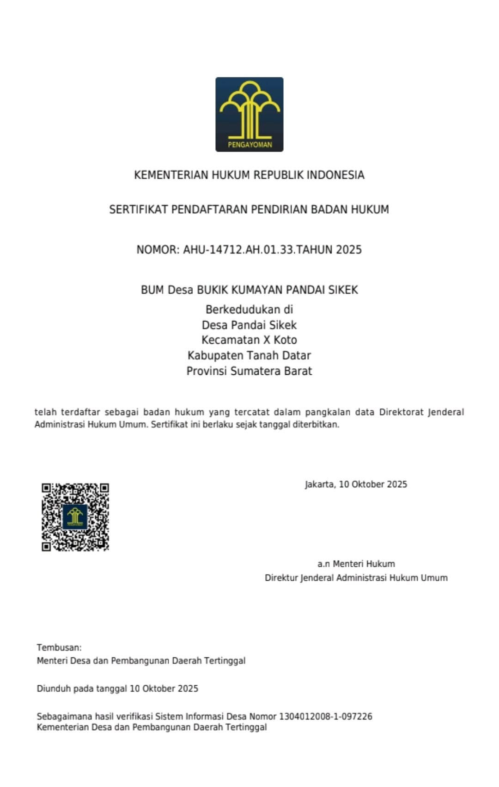
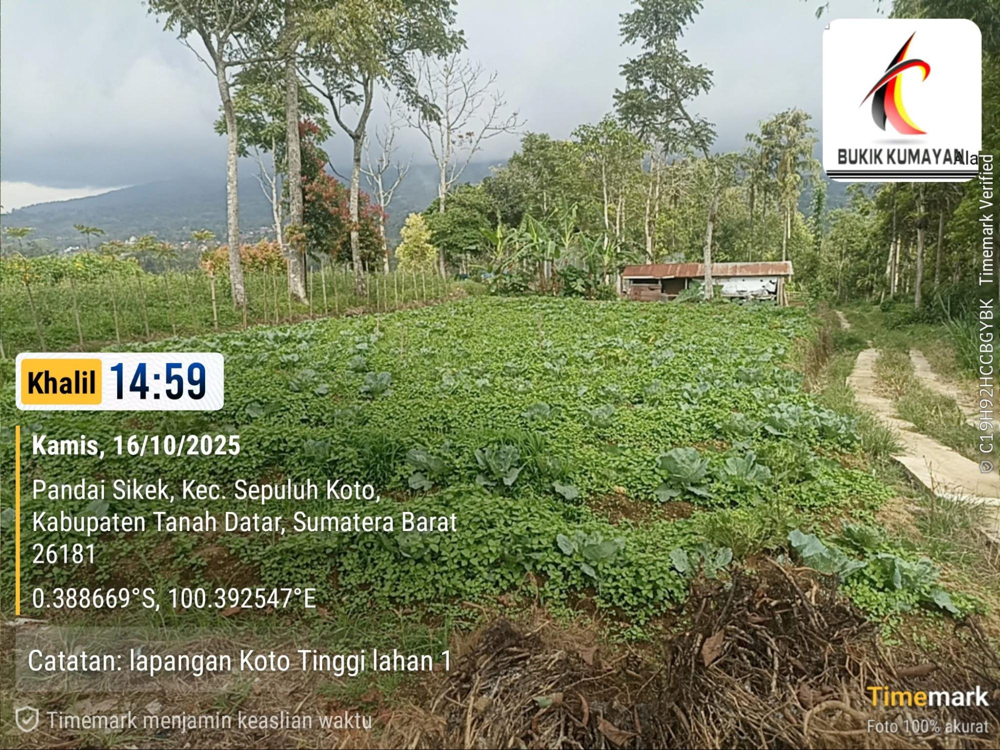

BUMNag Bukik Kamayan merupakan Badan Usaha Milik Nagari (BUMNag) yang berada di Nagari Pandai Sikek, Kecamatan X Koto, Kabupaten Tanah Datar, Sumatera Barat. BUMNag ini resmi berdiri pada 3 Desember 2018 sebagai wadah untuk mengembangkan potensi ekonomi masyarakat nagari melalui pengelolaan usaha yang berbasis pada sumber daya lokal.
Pada awal operasionalnya, BUMNag menjalankan berbagai kegiatan usaha hingga akhirnya mengalami masa vakum sejak tahun 2020 akibat pandemi COVID-19 yang berdampak pada aktivitas usaha. Setelah beberapa tahun tidak beroperasi, BUMNag kembali direvitalisasi dan mulai aktif kembali pada September 2025, dengan operasional yang berjalan secara penuh sejak awal Oktober 2025.
Saat ini, fokus utama BUMNag Bukik Kamayan adalah mendukung program ketahanan pangan, sejalan dengan kebijakan pemerintah yang mendorong penguatan sektor pangan melalui Badan Usaha Milik Desa/Nagari. Revitalisasi ini juga didukung oleh alokasi 20% Dana Desa Tahun 2025 yang ditujukan untuk pengembangan usaha ketahanan pangan di tingkat nagari.
Melalui pengelolaan yang berorientasi pada pemberdayaan masyarakat, BUMNag Bukik Kamayan berupaya menjadi penggerak ekonomi lokal dengan membangun kemitraan bersama petani serta mengoptimalkan potensi pertanian yang dimiliki Nagari Pandai Sikek.
BUMNag Bukik Kamayan saat ini berfokus pada sektor ketahanan pangan dengan mengembangkan komoditas pertanian yang menjadi kebutuhan masyarakat. Produk utama yang dipasarkan berasal dari hasil kerja sama dengan petani mitra di Nagari Pandai Sikek.
Bawang merah merupakan salah satu komoditas unggulan yang dikelola oleh BUMNag Bukik Kamayan. Budidaya dilakukan melalui sistem kemitraan dengan masyarakat, di mana petani menyediakan lahan dan tenaga kerja, sedangkan BUMNag menyediakan bibit sesuai harga pasar serta melakukan pendampingan selama proses budidaya. Setelah masa panen, bawang melalui proses pembersihan dan penyortiran untuk menghasilkan produk dengan kualitas yang lebih baik sebelum dipasarkan.
Selain bawang merah, BUMNag juga mengembangkan budidaya cabai dengan sistem tumpang sari. Pola tanam ini bertujuan untuk mengoptimalkan pemanfaatan lahan sekaligus meningkatkan produktivitas pertanian. Pengelolaan dilakukan bersama petani mitra dengan pendampingan teknis agar hasil panen memiliki kualitas yang baik dan bernilai jual.
BUMNag Bukik Kamayan menerapkan sistem kemitraan yang diawali dengan perjanjian kerja, survei lahan, dan pendampingan oleh Penyuluh Pertanian Lapangan (PPL). Lahan dan tenaga kerja disediakan oleh petani mitra, sedangkan BUMNag menyediakan bibit dan mendukung proses budidaya. Keuntungan usaha kemudian dibagi sesuai dengan kesepakatan yang telah dibuat bersama.
Harga bawang merah maupun cabai tidak bersifat tetap karena mengikuti kondisi pasar. Dengan demikian, harga jual dapat berubah sewaktu-waktu menyesuaikan permintaan, penawaran, dan perkembangan harga komoditas pertanian.
BUMNag Bukik Kamayan melayani pemesanan dalam jumlah maupun kebutuhan tertentu (custom) sesuai permintaan pelanggan. Produk juga dapat dikirim ke berbagai daerah menggunakan jasa ekspedisi sehingga memudahkan konsumen dalam memperoleh hasil pertanian dari Nagari Pandai Sikek.
BUMNag Bukik Kamayan menerapkan jam operasional yang fleksibel. Pelayanan kepada pelanggan, mitra, maupun pihak yang ingin melakukan kerja sama dapat dilakukan sesuai dengan kebutuhan dan waktu yang telah disepakati bersama. Sistem ini diterapkan karena sebagian besar aktivitas BUMNag menyesuaikan dengan kegiatan operasional di lapangan, seperti pendampingan petani, pengelolaan hasil panen, dan proses distribusi produk.
BUMNag Bukik Kamayan dapat dikunjungi secara langsung, namun disarankan untuk melakukan janji terlebih dahulu dengan pengelola. Hal ini bertujuan agar pihak BUMNag dapat memberikan pelayanan yang lebih optimal serta memastikan pengurus berada di lokasi saat kunjungan dilakukan.
BUMNag Bukik Kamayan melayani pengiriman produk ke berbagai daerah di Indonesia melalui jasa ekspedisi. Produk hasil pertanian yang telah diproses dan siap dipasarkan dapat dikirim sesuai dengan kebutuhan pelanggan, sehingga memudahkan konsumen, pelaku usaha, maupun mitra dari luar daerah untuk memperoleh produk dari Nagari Pandai Sikek.
Dengan sistem pelayanan yang fleksibel dan dukungan layanan pengiriman, BUMNag Bukik Kamayan terus berupaya memberikan kemudahan bagi masyarakat dan pelanggan dalam mengakses berbagai produk hasil pertanian yang dikelolanya.
BUMNag Bukik Kamayan terbuka untuk menjalin komunikasi dan kerja sama dengan masyarakat, pelaku usaha, maupun calon mitra yang ingin mengetahui lebih lanjut mengenai produk serta layanan yang tersedia. Informasi mengenai pemesanan, kerja sama, maupun kunjungan dapat dilakukan melalui kontak resmi yang dimiliki oleh BUMNag.
Nomor WhatsApp: 0821-6903-1363 (Jundrizal-Direktur Bumnag)
Facebook: BUMNag Bukik Kamayan Pandai Sikek
BUMNag Bukik Kamayan resmi didirikan pada 3 Desember 2018 sebagai Badan Usaha Milik Nagari yang bertujuan mengelola potensi ekonomi lokal dan meningkatkan kesejahteraan masyarakat Nagari Pandai Sikek. Pada awal operasionalnya, BUMNag menjalankan berbagai kegiatan usaha hingga akhirnya mengalami masa vakum sejak tahun 2020 akibat pandemi COVID-19 yang berdampak pada aktivitas usaha.
Melalui program revitalisasi Badan Usaha Milik Nagari, BUMNag Bukik Kamayan kembali aktif pada September 2025 dan mulai beroperasi secara penuh sejak awal Oktober 2025. Saat ini, fokus utama usaha diarahkan pada pengembangan sektor ketahanan pangan sebagai bentuk dukungan terhadap program pemerintah sekaligus upaya memperkuat perekonomian masyarakat berbasis pertanian.
Hingga saat ini, BUMNag Bukik Kamayan belum memiliki produk atau layanan yang secara khusus membedakannya dari BUMNag lain di sekitarnya. Fokus usaha masih berada pada pengembangan sektor ketahanan pangan, khususnya melalui budidaya bawang merah dan cabai dengan sistem kemitraan bersama petani lokal.
Selain sektor pertanian, Nagari Pandai Sikek juga memiliki berbagai potensi yang dapat dikembangkan di masa mendatang, seperti kerajinan songket Pandai Sikek yang telah dikenal luas serta potensi wisata di kawasan Pemancar. Potensi-potensi tersebut diharapkan dapat menjadi peluang pengembangan unit usaha baru sehingga BUMNag mampu memberikan manfaat ekonomi yang lebih besar bagi masyarakat nagari.
Berdasarkan hasil wawancara, hingga saat ini belum terdapat informasi mengenai penghargaan maupun sertifikasi yang dimiliki oleh BUMNag Bukik Kamayan.